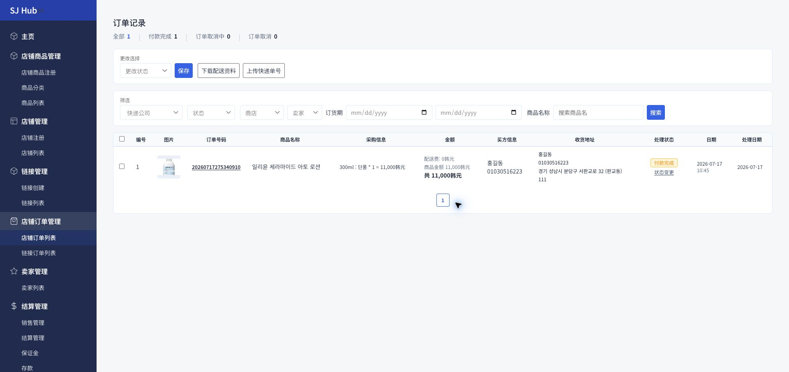
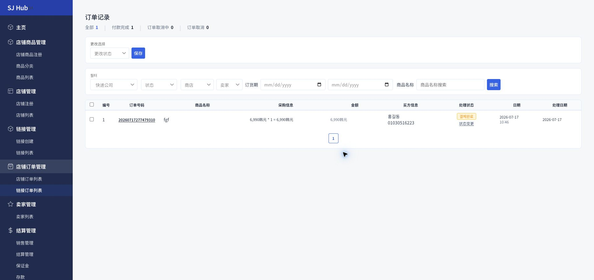

💡 어느 상점의 주문인지 헷갈리면 "상점" 필터로 특정 상점만 걸러보세요. 상점별 주문은 상점관리 > 상점 목록의 "주문기록" 버튼으로도 바로 이동할 수 있습니다.

💡 배송지가 없는 이유 — 링크 주문은 배송지 입력 없이 결제만 받는 상품(디지털 상품, 참가권 등)에 주로 사용합니다. 실물 배송이 필요하다면 상점 상품관리에서 등록해 배송지를 함께 받으세요.